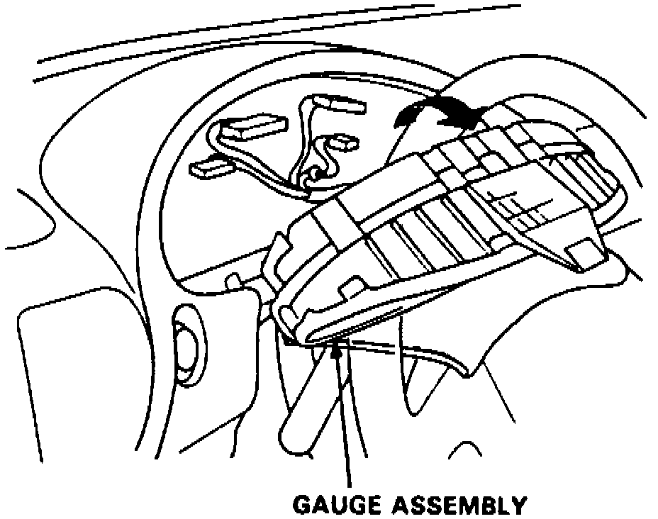

Instrument Cluster / Carrier: Service and Repair
On models equipped with airbag system, refer to Technician Safety Information for system disarming and arming procedures.1. On models equipped with radio coded theft protection system, refer to Vehicle Damage Warnings for system disarming and arming procedures.
2. Slide instrument cluster bezel rearward, carefully disengaging bottom clips, then tilt steering wheel down.
3. Remove three instrument cluster mounting screws, then pry assembly out and disconnect connectors from rear. Cover steering column with a protective cloth during this operation.
Fig. 9 Instrument Cluster Removal:

4. Remove instrument cluster from panel by rotating top toward steering wheel and guiding past steering column, Fig. 9.
5. Reverse procedure to install.
6. On models equipped with airbag system, refer to Technician Safety Information for system disarming and arming procedures.
7. On models equipped with radio coded theft protection system, refer to Vehicle Damage Warnings for system disarming and arming procedures.